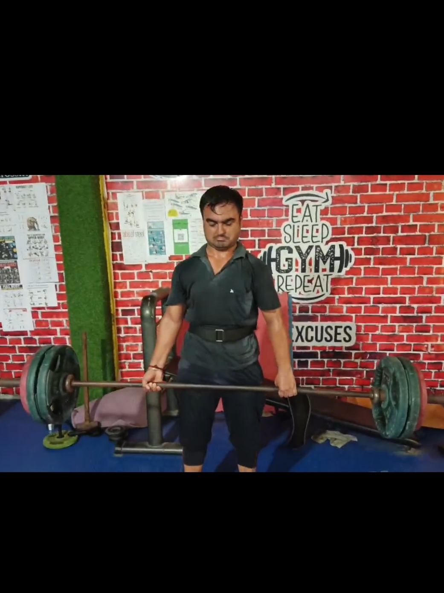
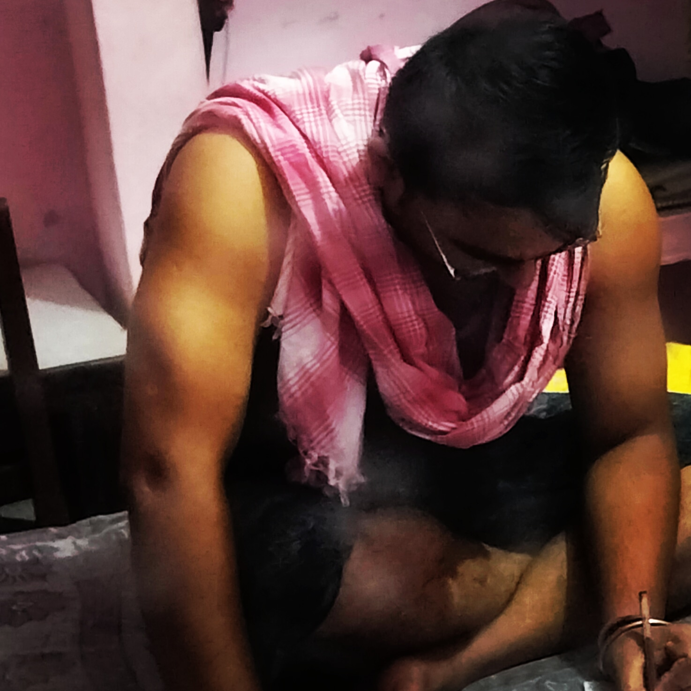
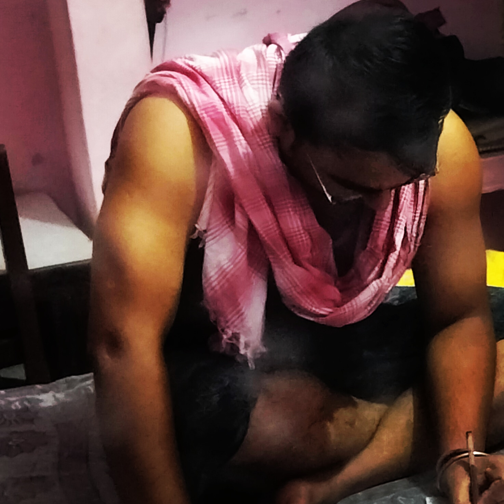

Weekly Gym Workout Plan

 

Monday- Chest and Triceps
- Flat Bench Press
- Incline Bench Press
- Decline Bench Press
- Chest Flys
- Cable Crossover
- Tricep Push Down
- Overhead Tricep Extension
- Skull Crushes
Tuesday-Back and Biceps
- Deadlift
- Lat Pulldown
- Bent Over Rows
- Seated Cable Rows
- T-Bar Rows
- Barbell Curls
- Dumbbell Curls
- Preacher Curls
- Cable Curls
Wednesday-Shoulders and
Abs
- Overhead Press
- Lateral Raises
- Front Raises
- Rear Delt Flys
- Arnold Press
- Upright Rows
- Plank
- Russian Twist
- Cable Crunches
- Hanging Leg Raises
Thursday-Legs and Cardio
- Squats
- Leg Press
- Lunges
- Leg Extensions
- Hamstring Curls
- Calf Raises
- HIIT-Stationary Bike
Friday-Chest and Biceps
- Dumbbell Bench Press
- Inclined Dumbbell Flys
- Hammer Curls
- Concentration Curls
- Incline Dumbbell Curls
- Reverse Curls
- Cable Hammer Curls
- 21S
- Cable Flys
Saturday-Back, Triceps and Forearms
- One-arm Dumbbell Rows
- Pull Overs
- Inverted Rows
- Close Grip Bench Press
- Tricep Kickback
- Overhead Tricep Extension
- Wrist Curls
- Reverse Wrist Curls
- Farmers Walk